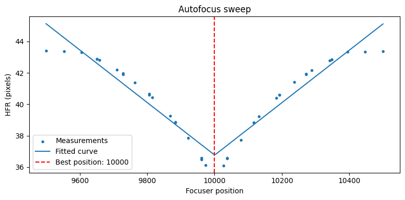
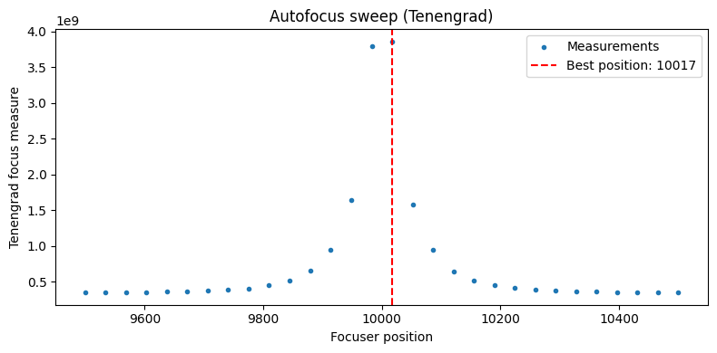

Getting Started#
This notebook walks through the core workflow of AstrAFocus:
Setting up a simulated telescope
Running an autofocus sweep
Inspecting the results
Trying different focus measure operators
No real hardware or external data files are needed — we use the built-in CabaretDeviceSimulator, which generates synthetic star images at each focuser position.
1. Setting up the simulator#
The CabaretDeviceSimulator wraps a synthetic camera and focuser. The focuser has a true best position at step 10 000, and we start it slightly out of focus at step 11 000.
from astrafocus.interface.simulation import CabaretDeviceSimulator
simulator = CabaretDeviceSimulator()
simulator.focuser
FocuserInterface(current_position=9550, allowed_range=(9500, 10500))
2. Running the autofocuser#
AnalyticResponseAutofocuser sweeps the focuser through a set of positions, measures focus quality at each step, then fits a parabola to locate the optimum.
Here we use a two-pass strategy:
Pass 1: coarse sweep with
n_steps=20Pass 2: fine sweep with
n_steps=10around the best position found in pass 1
We use HFRStarFocusMeasure (Half-Flux Radius), which detects stars in each image and measures their size. Smaller HFR means better focus.
import numpy as np
from astrafocus.autofocuser import AnalyticResponseAutofocuser
from astrafocus.star_size_focus_measure_operators import HFRStarFocusMeasure
np.random.seed(42)
autofocuser = AnalyticResponseAutofocuser(
autofocus_device_manager=simulator,
exposure_time=3.0,
focus_measure_operator=HFRStarFocusMeasure,
n_steps=(20, 10),
n_exposures=(1, 2),
decrease_search_range=True,
percent_to_cut=70,
)
success = autofocuser.run()
print(f"Autofocus succeeded: {success}")
print(f"Best focus position: {autofocuser.best_focus_position}")
20 of 40 focus record points are NaN (50%). Results may be unreliable.
Autofocus succeeded: True
Best focus position: 10000
3. Inspecting the results#
The focus_record DataFrame contains every measured (position, focus measure) pair across all sweeps.
df = autofocuser.focus_record
print(f"{len(df)} measurements taken")
df.head()
40 measurements taken
| focus_pos | focus_measure | |
|---|---|---|
| 0 | 9500 | 43.400431 |
| 1 | 9553 | 43.366718 |
| 2 | 9605 | 43.317955 |
| 3 | 9658 | 42.833858 |
| 4 | 9711 | 42.183451 |
Plotting the focus curve#
The fitted parabola shows where the focus measure is expected to be optimal. The vertical line marks the best focus position that was determined.
import matplotlib.pyplot as plt
fig, ax = plt.subplots(figsize=(8, 4))
# Raw measurements
ax.scatter(df.focus_pos, df.focus_measure, marker=".", label="Measurements", zorder=3)
# Fitted curve
sampled_pos = np.linspace(*autofocuser.search_range, 200)
sampled_responses = autofocuser.get_focus_response_curve_fit(sampled_pos)
ax.plot(sampled_pos, sampled_responses, label="Fitted curve")
# Best position
ax.axvline(
autofocuser.best_focus_position,
color="red",
linestyle="--",
label=f"Best position: {autofocuser.best_focus_position}",
)
ax.set_xlabel("Focuser position")
ax.set_ylabel("HFR (pixels)")
ax.set_title("Autofocus sweep")
ax.legend()
plt.tight_layout()
plt.show()

4. Trying different focus measure operators#
AstrAFocus ships with 13 focus measure operators. Image-based operators (FFT, Tenengrad, Laplacian, …) do not require star detection and can be faster.
Use FocusMeasureOperatorRegistry to look them up by name.
from astrafocus import FocusMeasureOperatorRegistry
print("Available operators:", FocusMeasureOperatorRegistry.list())
Available operators: ['hfr', 'gauss', 'fft', 'fft_power', 'fft_phase_magnitude_product', 'normalized_variance', 'brenner', 'tenengrad', 'laplacian', 'variance_laplacian', 'absolute_gradient', 'squared_gradient', 'auto_correlation']
For image-based operators use NonParametricResponseAutofocuser, which fits a smooth curve (LOWESS by default) rather than an analytic function.
from astrafocus.autofocuser import NonParametricResponseAutofocuser
from astrafocus.focus_measure_operators import TenengradFocusMeasure
simulator = CabaretDeviceSimulator()
np.random.seed(42)
autofocuser_2 = NonParametricResponseAutofocuser(
autofocus_device_manager=simulator,
exposure_time=3.0,
focus_measure_operator=TenengradFocusMeasure(),
n_steps=30,
)
autofocuser_2.run()
print(f"Best focus position (Tenengrad): {autofocuser_2.best_focus_position}")
Best focus position (Tenengrad): 10017
# Plot
fig, ax = plt.subplots(figsize=(8, 4))
ax.scatter(
autofocuser_2.focus_record.focus_pos,
autofocuser_2.focus_record.focus_measure,
marker=".",
label="Measurements",
)
ax.axvline(
autofocuser_2.best_focus_position,
color="red",
linestyle="--",
label=f"Best position: {autofocuser_2.best_focus_position}",
)
ax.set_xlabel("Focuser position")
ax.set_ylabel("Tenengrad focus measure")
ax.set_title("Autofocus sweep (Tenengrad)")
ax.legend()
plt.tight_layout()
plt.show()

Next steps#
Sky targeting — use
ZenithNeighbourhoodQueryto find good focus fields near zenith before starting an autofocus run.Real hardware — implement
CameraInterface,FocuserInterface, and wrap them in anAutofocusDeviceManagerto connect to your telescope.API reference — see the API docs for all classes and parameters.